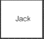
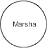

The Web address of this article is
http://sfhelp.org/cx/tools/maps.htm
Updated
01-16-2015
Clicking underlined links here will open a
new window. Other links will open an informational popup,
so please turn off your
browser's popup blocker or allow popups from this nonprofit Web site.
If your playback device doesn't support Javascript, the popups may not display.
Follow underlined links after
finishing this article to avoid getting lost.
This is one of a series of articles
inLesson 2 - learn communication basics and seven powerful
skills
to get more daily needs met more often. Progress with this Lesson
depends on concurrent progress on Lesson 1 - free your resident
true Self to guide your personality in calm and conflictual times.
The unique Lesson 2guidebook
Satisfactions
(Xlibris.com, 2nd ed., 2010) integrates the key articles in the series, and
includes related resources.
This article describes and
illustrates a powerful communication problem-solving technique called
mapping. Use this tool any time you have chronic or urgent
problems communicating effectively among your
personality subselves
and with other people.
This brief YouTube video previews what you'll read in this article.
The video mentions eight self-improvement lessons in this Web site - I've
simplified that to seven.
The article assumes you're familiar with...
the
intro to this nonprofit
Web site and the premises
underlying it
Communication
between people and/or personality subselves is a semi-conscious process powered by each
person's drive to satisfy current needs
(reduce discomforts). Every communication exchange (sequence) has a beginning, a middle process, and
an ending. Some sequences take seconds, and others take minutes, hours,
days, or longer.
Jack [feels + needs + thinks + does (something)] that Jill
"decodes" (deduces meaning from); so...
Jillreacts: [feels + needs
+ thinks + does (something)] that Jack
"decodes," and...
Jack reacts to her reaction: [feels + needs
+ thinks + does (something)] that affects Jill; so she (continues or ends
the sequence).
This interactive... act react...
sequence continues until one or both partners
feel their main needs are met well enough or they need to do something
else.
Our
internal and mutual needs conflict all the time. - e.g.
"I need to nap, and I also need to meet my friend for lunch;" and "I need to
cuddle, and you need to take a shower and call your brother."
We each evolve a
basic style of reacting (thinking + feeling + behaving) with
various people. You may react differently to conflict with a female
vs. a male, an adult vs. a child, with your boss vs. a co-worker, and friends, vs. strangers. Do you know
what your several
styles are?
Our typical reactions
are mostly unconscious until we use the skill of
awareness to learn "How do
you and I usually react together?
Who
usually gets their current needs met - you, me, us, or nobody?"
If someone usually doesn't get their current needs met well enough,
each react-point in our sequence is a place
where you or I can change our reaction and get more of our mutual needs met. Mapping is a simple way to assess your
communication sequences and improve them.
Mapping Communication
Sequences
Any perceived
action by person "A" that causes a "significant' reaction in person "B" is
"communication.' To map a communication sequence, pick a child or adult
with whom you have a relationship with. Then...
Choose attitudes of curiosity and neutrality, and expect to learn ways to
improve your communication
outcomes, rather than
blaming or defending.This
is not an exercise to find out who's right or wrong!
Note your and the other
person's usual expectations about your sequence: who will get their
needs met, and how? Note your usual initial
E(motion)-levels
(above or below the ears), and
respect-attitudes
about each other: mutual respect, 1-up, or 1-down.
At the top of a large sheet
of paper, draw a symbol for (e.g. a circle, square, diamond), or write
the name of the person who "starts" the sequence. Write briefly
next to the symbol or name the key thing/s you think s/he feels,
needs, thinks, says, and does at that point in the cycle. Also
guesstimate who was leading his or her
personality
parts at that time:
true Self
(capital "S") or other subselves.
Non-verbal behavior counts as much as
verbal (words and sounds). With actions, be as specific and factual as
you can, and avoid judgments ("Gets unreasonable.")
Summarize only those
actions that could be audio or video taped. Include silences, and note significant
patterns of eye contact, hand, face, body, and voice dynamics, and interruptions and
repetitions.
This might look like ...

Feels:
ignored, misunderstood, hurt, and frustrated by (stepson) Carl;
Needs:
to vent and be heard by
wife Marsha;
Thinks: "I'll try it again, but Marsh'll probably get defensive and argue (vs.
problem solve);"
Says: "Marsha, I need to tell you what happened between Carl and me."
Does: Avoids eye contact, crosses arms, shakes head slightly, frowns.
Using a different symbol, objectively summarize the
same factors for person 2 as s/he reacts to person 1's communication:

Feels: Apprehensive, weary,
"depressed," and guarded;
Needs: to avoid conflict, and feeling caught between Jack and Carl again;
Thinks: "I know what Jack's going to say: Carl's a jerk, and I'm a bad
Mom."
Says: "So what's Carl done now?"
Does: Frowns, voice tone sarcastic, shallow breathing, stares at Jack;
Attitude: "I feel 1-down, and Jack seems 1-up"
E level: below the ears at first, but rising fast.
In charge: unknown Guardian subselves and/or inner Kids
Option - also estimate each person's
awareness bubble
at each reaction point: 1-person, 2-person, or no-person.
Alternate diagramming back and forth between the two of
you, (action
reaction),
until you reach an endingto this communication sequence (e.g. Jack
and Marsha stop talking). Note that silence (Says: nothing) is a
communication: it causes reactions ("You're ignoring my request."),
just like words.
Option - Let your overall
sequence of actreact steps form a circle - or connect the last step to the first with a dotted
arrow,
if this sequence is habitual. You may have
several basic
cycles, depending on the topic and setting.
Estimate the usual outcome: whose
communication
and
other
needs got met or didn't? If you needed to problem-solve how do each of you feel: is your
communication processeffective enough?
If you mapped this alone, seek your partner's input on the map. Edit it until you
both feel it's accurate enough. It's OK to have differing perceptions of your
communication sequence - that's a helpful learning by itself. Avoid
power struggles ("I'm
right!" "No, I am!"). Try "I see (experience) it
differently" or similar.
Reality-check the possibility that your shared
sequence is
cyclical (a sequence of sequences, or pattern): Will this
beginning > process > outcome sequence probably
occur again between you? Will you each act about the same or differently? Again -
the point
here is growing your
awareness and options, not about
blame or competition!
Every circle or square in
your interactive sequence is a place where one or both of you can improve the shared
outcome (get more current needs met).
There are many change points
in most sequences.
Use
awareness and
metatalk
skills as partners to discover what specific changes would help you each get
your respective communication and other needs met well enough, in a
mutually-satisfying way.
You each have half the responsibility
and choiceto improve the sequence. Mapping your communication sequences
- specially conflicts - will raise your awarenesses of
how
you communicate together
now, so expect some useful shifts!
For Extra Credit
Needs are mental or physical discomforts. Most people unconsciously focus on filling surface needs,
which are symptoms of what they really
need. Option: at
each point in the sequence,
dig down
below the surface needs ("I need to know if you put gas in the car")
to estimate the person's
primary needs ("I need to reduce my anxiety about running out of gas the next time
I use the car.")
When you've tried mapping your
sequences
with several people try adding a third person who's directly involved, like a
child. draw a unique symbol for them, and note the same factors for them at each
stage of your sequence. Your sequence then becomes something like...
"A" ([feels /
thinks / needs / says / does / R-message / E-level / in charge]
"B" reacts [ --- ] "C" reacts by [ --- ]
"A" reacts by [ --- ] ...
More extra credit: most of us
fall into communication patternsover periods of time - i.e.
repeated sequences. Try mapping your patterns on important topics -
specially the outcomes of your sequences: who got their primary needs met well
enough? ("The last three times we've talked about money, you seemed to
feel satisfied and I didn't.")
As you map your sequences and patterns,
watch for
relationship triangles ("Jack supports Susan, and criticizes Ben.")
These are specially common in multi-home
divorcing families and
stepfamilies.
Besides noting whose needs got met, the most important thing
to glean from communication mapping is seeing when someone is
ruled by a false self.
When that happens, the odds of effective communication drop sharply.
Three main reasons
for ineffective communications are
psychological
wounds
+ communication
unawareness
+ ignorance (lack of knowledge). Lesson 1 here offers an effective way to assess and reduce the first of these, and
Lesson 2 can help you reduce the other two.
As with all new concepts, you need to try mapping
several typical sequences (say with five or fewer sequence events) to experience the full
value of this useful technique.
Notice whether you're
motivated to try mapping in the next several days. If not, a
well-meaning false self may be controlling you.
Recap
This article outlines a way to
diagram the sequence of
verbal and nonverbal interactions between people or personality
subselves, by estimating
up to nine personal variables at each step of the sequence. You can
also profitably map communication patterns (sequences of sequences)
between two or more people over
time.
The purpose of mapping is to raise your awareness of
your communication
process,
and spot and reduce any
blocks
that hinder achieving win-win
outcomes
together. This is not meant
to be tool for criticizing someone or proving that one person is right
or a "better communicator"! Ideally, all people in any
sequence or pattern will make and discuss each map cooperatively, using
these seven powerful
skills.
For more perspective, see this illustration
of a sequence between two parents and their teen daughter. Then
continue studying and applying
Lesson 1 and Lesson 2!
Pause,
breathe, and reflect - why did you read this article? Did you get what you
needed? If not, what do you need? Who's
answering
these questions - your
true Self,
or
''someone else''?